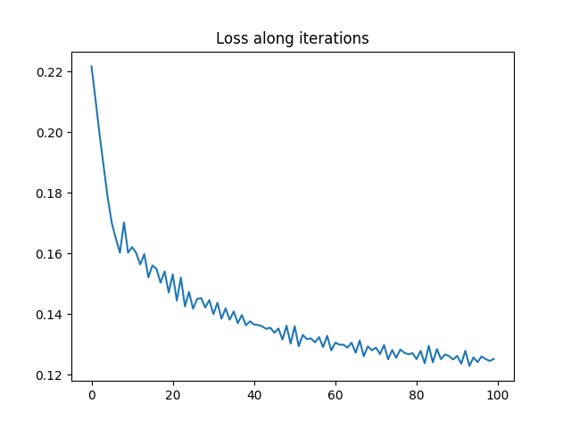

Note
Click here to download the full example code
Optimizing the Gromov-Wasserstein distance with PyTorch
In this example, we use the pytorch backend to optimize the Gromov-Wasserstein (GW) loss between two graphs expressed as empirical distribution.
In the first part, we optimize the weights on the node of a simple template graph so that it minimizes the GW with a given Stochastic Block Model graph. We can see that this actually recovers the proportion of classes in the SBM and allows for an accurate clustering of the nodes using the GW optimal plan.
In the second part, we optimize simultaneously the weights and the sructure of the template graph which allows us to perform graph compression and to recover other properties of the SBM.
The backend actually uses the gradients expressed in [38] to optimize the weights.
[38] C. Vincent-Cuaz, T. Vayer, R. Flamary, M. Corneli, N. Courty, Online Graph Dictionary Learning, International Conference on Machine Learning (ICML), 2021.
# Author: Rémi Flamary <remi.flamary@polytechnique.edu>
#
# License: MIT License
# sphinx_gallery_thumbnail_number = 3
from sklearn.manifold import MDS
import numpy as np
import matplotlib.pylab as pl
import torch
import ot
from ot.gromov import gromov_wasserstein2
Graph generation
rng = np.random.RandomState(42)
def get_sbm(n, nc, ratio, P):
nbpc = np.round(n * ratio).astype(int)
n = np.sum(nbpc)
C = np.zeros((n, n))
for c1 in range(nc):
for c2 in range(c1 + 1):
if c1 == c2:
for i in range(np.sum(nbpc[:c1]), np.sum(nbpc[:c1 + 1])):
for j in range(np.sum(nbpc[:c2]), i):
if rng.rand() <= P[c1, c2]:
C[i, j] = 1
else:
for i in range(np.sum(nbpc[:c1]), np.sum(nbpc[:c1 + 1])):
for j in range(np.sum(nbpc[:c2]), np.sum(nbpc[:c2 + 1])):
if rng.rand() <= P[c1, c2]:
C[i, j] = 1
return C + C.T
n = 100
nc = 3
ratio = np.array([.5, .3, .2])
P = np.array(0.6 * np.eye(3) + 0.05 * np.ones((3, 3)))
C1 = get_sbm(n, nc, ratio, P)
# get 2d position for nodes
x1 = MDS(dissimilarity='precomputed', random_state=0).fit_transform(1 - C1)
def plot_graph(x, C, color='C0', s=None):
for j in range(C.shape[0]):
for i in range(j):
if C[i, j] > 0:
pl.plot([x[i, 0], x[j, 0]], [x[i, 1], x[j, 1]], alpha=0.2, color='k')
pl.scatter(x[:, 0], x[:, 1], c=color, s=s, zorder=10, edgecolors='k', cmap='tab10', vmax=9)
pl.figure(1, (10, 5))
pl.clf()
pl.subplot(1, 2, 1)
plot_graph(x1, C1, color='C0')
pl.title("SBM Graph")
pl.axis("off")
pl.subplot(1, 2, 2)
pl.imshow(C1, interpolation='nearest')
pl.title("Adjacency matrix")
pl.axis("off")
(-0.5, 99.5, 99.5, -0.5)
Optimizing GW w.r.t. the weights on a template structure
The adajacency matrix C1 is block diagonal with 3 blocks. We want to optimize the weights of a simple template C0=eye(3) and see if we can recover the proportion of classes from the SBM (up to a permutation).
C0 = np.eye(3)
def min_weight_gw(C1, C2, a2, nb_iter_max=100, lr=1e-2):
""" solve min_a GW(C1,C2,a, a2) by gradient descent"""
# use pyTorch for our data
C1_torch = torch.tensor(C1)
C2_torch = torch.tensor(C2)
a0 = rng.rand(C1.shape[0]) # random_init
a0 /= a0.sum() # on simplex
a1_torch = torch.tensor(a0).requires_grad_(True)
a2_torch = torch.tensor(a2)
loss_iter = []
for i in range(nb_iter_max):
loss = gromov_wasserstein2(C1_torch, C2_torch, a1_torch, a2_torch)
loss_iter.append(loss.clone().detach().cpu().numpy())
loss.backward()
#print("{:03d} | {}".format(i, loss_iter[-1]))
# performs a step of projected gradient descent
with torch.no_grad():
grad = a1_torch.grad
a1_torch -= grad * lr # step
a1_torch.grad.zero_()
a1_torch.data = ot.utils.proj_simplex(a1_torch)
a1 = a1_torch.clone().detach().cpu().numpy()
return a1, loss_iter
a0_est, loss_iter0 = min_weight_gw(C0, C1, ot.unif(n), nb_iter_max=100, lr=1e-2)
pl.figure(2)
pl.plot(loss_iter0)
pl.title("Loss along iterations")
print("Estimated weights : ", a0_est)
print("True proportions : ", ratio)
Estimated weights : [0.3028101 0.20249103 0.49469887]
True proportions : [0.5 0.3 0.2]
It is clear that the optimization has converged and that we recover the ratio of the different classes in the SBM graph up to a permutation.
Community clustering with uniform and estimated weights
The GW OT plan can be used to perform a clustering of the nodes of a graph when computing the GW with a simple template like C0 by labeling nodes in the original graph using by the index of the noe in the template receiving the most mass.
We show here the result of such a clustering when using uniform weights on the template C0 and when using the optimal weights previously estimated.
T_unif = ot.gromov_wasserstein(C1, C0, ot.unif(n), ot.unif(3))
label_unif = T_unif.argmax(1)
T_est = ot.gromov_wasserstein(C1, C0, ot.unif(n), a0_est)
label_est = T_est.argmax(1)
pl.figure(3, (10, 5))
pl.clf()
pl.subplot(1, 2, 1)
plot_graph(x1, C1, color=label_unif)
pl.title("Graph clustering unif. weights")
pl.axis("off")
pl.subplot(1, 2, 2)
plot_graph(x1, C1, color=label_est)
pl.title("Graph clustering est. weights")
pl.axis("off")
(-0.7760154087782544, 0.5785554952306825, -0.7708789474386256, 0.6510858680019992)
Graph compression with GW
Now we optimize both the weights and structure of a small graph that minimize the GW distance wrt our data graph. This can be seen as graph compression but can also recover important properties of an SBM such as its class proportion but also its matrix of probability of links between classes
def graph_compession_gw(nb_nodes, C2, a2, nb_iter_max=100, lr=1e-2):
""" solve min_a GW(C1,C2,a, a2) by gradient descent"""
# use pyTorch for our data
C2_torch = torch.tensor(C2)
a2_torch = torch.tensor(a2)
a0 = rng.rand(nb_nodes) # random_init
a0 /= a0.sum() # on simplex
a1_torch = torch.tensor(a0).requires_grad_(True)
C0 = np.eye(nb_nodes)
C1_torch = torch.tensor(C0).requires_grad_(True)
loss_iter = []
for i in range(nb_iter_max):
loss = gromov_wasserstein2(C1_torch, C2_torch, a1_torch, a2_torch)
loss_iter.append(loss.clone().detach().cpu().numpy())
loss.backward()
#print("{:03d} | {}".format(i, loss_iter[-1]))
# performs a step of projected gradient descent
with torch.no_grad():
grad = a1_torch.grad
a1_torch -= grad * lr # step
a1_torch.grad.zero_()
a1_torch.data = ot.utils.proj_simplex(a1_torch)
grad = C1_torch.grad
C1_torch -= grad * lr # step
C1_torch.grad.zero_()
C1_torch.data = torch.clamp(C1_torch, 0, 1)
a1 = a1_torch.clone().detach().cpu().numpy()
C1 = C1_torch.clone().detach().cpu().numpy()
return a1, C1, loss_iter
nb_nodes = 3
a0_est2, C0_est2, loss_iter2 = graph_compession_gw(nb_nodes, C1, ot.unif(n),
nb_iter_max=100, lr=5e-2)
pl.figure(4)
pl.plot(loss_iter2)
pl.title("Loss along iterations")
print("Estimated weights : ", a0_est2)
print("True proportions : ", ratio)
pl.figure(6, (10, 3.5))
pl.clf()
pl.subplot(1, 2, 1)
pl.imshow(P, vmin=0, vmax=1)
pl.title('True SBM P matrix')
pl.subplot(1, 2, 2)
pl.imshow(C0_est2, vmin=0, vmax=1)
pl.title('Estimated C0 matrix')
pl.colorbar()
- 
Estimated weights : [0.29162953 0.1935312 0.51483927]
True proportions : [0.5 0.3 0.2]
<matplotlib.colorbar.Colorbar object at 0x7f585eb15520>
Total running time of the script: ( 0 minutes 8.128 seconds)